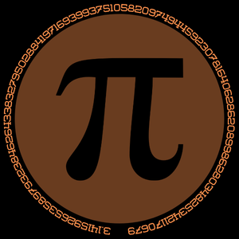

การหาพื่นที่วงกลม
สูตร:
A=πr2
● A = พื้นที่
● r = รัศมี
● π ≈ 3.14159
ตัวอย่าง:
หากรัศมีของวงกลมคือ 8 เมตร: A = π×82 = π×64 ≈ 201.06 m2
ขั้นตอนการคำนวณ:
1.ยกกำลังรัศมี: 82=648^2 = 6482=64
2.คูณด้วยค่า π: 3.14159×64
3.ผลลัพธ์: ประมาณ 201.06 ตารางเมตร
